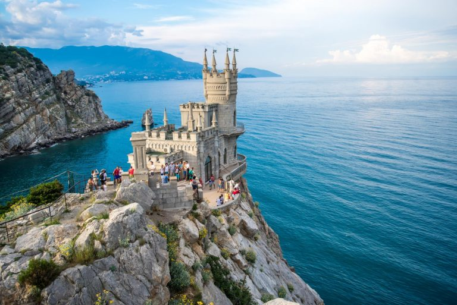

Гора Ай-Петрі
«Здесь хорошо, вы мне поверьте. Внизу шумит морской прибой, А надо мной гора Ай Петри В сиянии дымки голубой. Мне птицы песни напевают. Пусть ветер вдаль их унесет, А рядом тихо проплывает Красавец белый теплоход».
 Test
Test
місто-курорт в Україні на південному узбережжі Криму, популярний центр міжнародного туризму і відпочинку, найбільш популярний морський курорт Криму. Місто республіканського підпорядкування у складі Автономної Республіки Крим. В епоху середньовіччя відома під назвами Джаліта, Яліта, Кауліта.
 Test link«Здесь хорошо, вы мне поверьте. Внизу шумит морской прибой, А надо мной гора Ай Петри В сиянии дымки голубой. Мне птицы песни напевают. Пусть ветер вдаль их унесет, А рядом тихо проплывает Красавец белый теплоход».
Test